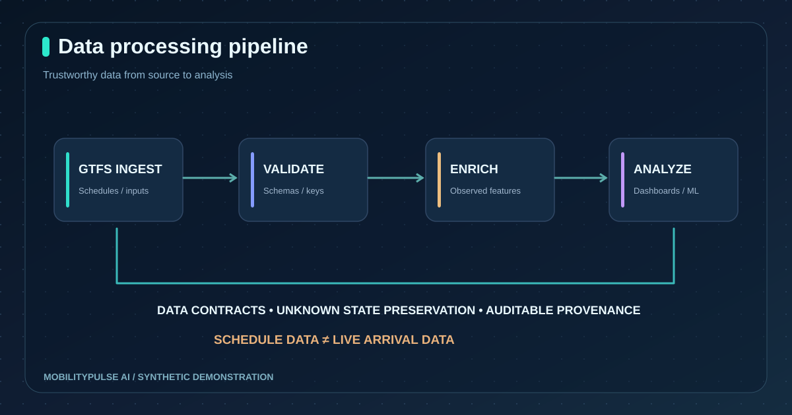

MobilityPulse AI
Public Transport Reliability & Accessibility Intelligence — an end-to-end GTFS, data quality, analytics and web application portfolio project.

Transparent transport analytics.
Designed to explore route service patterns, observed delay statistics, stop-level headways, and reported accessibility metadata without treating published schedules as live ground truth. The complete GitHub source contains ingestion, analytics, REST endpoints, UI, modeling experiments, Docker and CI.
Demonstration counts are intentionally labeled as synthetic; operational transport metrics are not independently established.
Schedules are not arrival observations.
A transit schedule documents planned service, not whether a particular trip arrived on time. GTFS access codes may also be unknown or stale. A trustworthy dashboard must preserve missingness and separate timetables, agency predictions, genuinely observed events and generated sample data.


Ingest → validate → analyze → explain.
GTFS Schedule ingestion
Validate agency, routes, trips, stops and stop-times; enforce coordinate and reference checks; show a representative schedule route pattern. An optional permission-gated Hyderabad TGSRTC static GTFS downloader is documented.
Observed reliability pipeline
Define punctuality from actual arrival timestamps, compute stop-event cancellations separately, and derive route headways only within the same route/stop/day group.


Full-stack dashboards with explicit uncertainty.
A responsive React interface provides the overview, route explorer, stop details, reliability charts, accessibility register and feed-health page. FastAPI exposes documented endpoints for route/stop/catalog data, synthetic observed-event analytics, optional offline delay scoring and diagnostic GTFS-Realtime publisher predictions. These predictions are not treated as actual arrivals.


Tests and builds rather than unsupported performance claims.
The project's GitHub Actions build has verified Python tests, synthetic data generation, CSV exports, offline ML evaluation, React production compilation, and a complete Docker Compose smoke test. A separate workflow produces a downloadable portfolio/demo website artifact. This does not prove real-world transit prediction quality or active public backend hosting.


From portfolio demonstration to operational service.
Real deployment needs feed licensing and mapping, monitored ingestion, durable data storage, privacy/security review, authenticated infrastructure, source availability checks, independent accuracy evaluation and published reliability/coverage metrics. The current GTFS downloader is optional and schedule-only; the GTFS-Realtime adapter supports diagnostics and publisher estimates but cannot certify actual arrivals.